Analyzing Ego Networks
Ego Networks and Ego Network Data
An ego-network, is just a subgraph of a larger network–referred to as an ego graph–that includes a node of interest (“ego”), all of the connections between ego and their neighbors (called “alters”) and usually all of the connections between each of the alters, excluding the connections alters may have with other nodes who are not directly tied to ego.
Ego network data is social network data collected in such way (e.g., using standard social survey techniques) that you capture the ego networks of some set of people, usually a convenience sample or, more rarely, a probability sample of some population.
Note that if you collect traditional (“whole”) network data (e.g., all the people in a classroom) you have ego network data for that settings (the ego subgraphs of each node as just defined), but not the reverse; ego-network data cannot be converted into “whole” network data, although it can approximate it.
Once you have ego network data you can analyze each ego graph using the standard techniques we learned so far (if you are only interested in the structural characteristics of the ego graph).
If you have attributes on each alter, you can alternatively compute measures of diversity to or homophily to get a sense of how likely ego is to connect to similar or diverse others.
Structural Measures
The Clustering Coefficient
Perhaps the most basic structural characteristic of an ego network is the density of the subgraph formed by all of the connections between the alters. This is called ego’s clustering coefficient.
Let’s see how it works. First we load up the New Hope Star Wars social network included in the networkdata package (Gabasova 2016):
The starwars object contain a list of igraph network data sets corresponding to seven of the Star Wars films (the three originals, three prequels, and The Force Awakens). They are ordered in terms of the film chronology, so Episode IV, A New Hope is the fourth element in the list.
As we said an ego graph is just a subgraph centered on a particular actor. So R2-D2’s ego graph is just:
And we can just plot it like we would any igraph object:
V(r2)$color <- rep(2, vcount(r2)) #alters appear in blue
V(r2)$color[which(V(r2)$name == "R2-D2")] <- 1 #ego appears in tan
plot(r2,
vertex.size=10, vertex.frame.color="lightgray",
vertex.label.dist=2,
layout = layout_as_star(r2, center = "R2-D2"),
vertex.label.cex = 1.25, edge.color = "lightgray")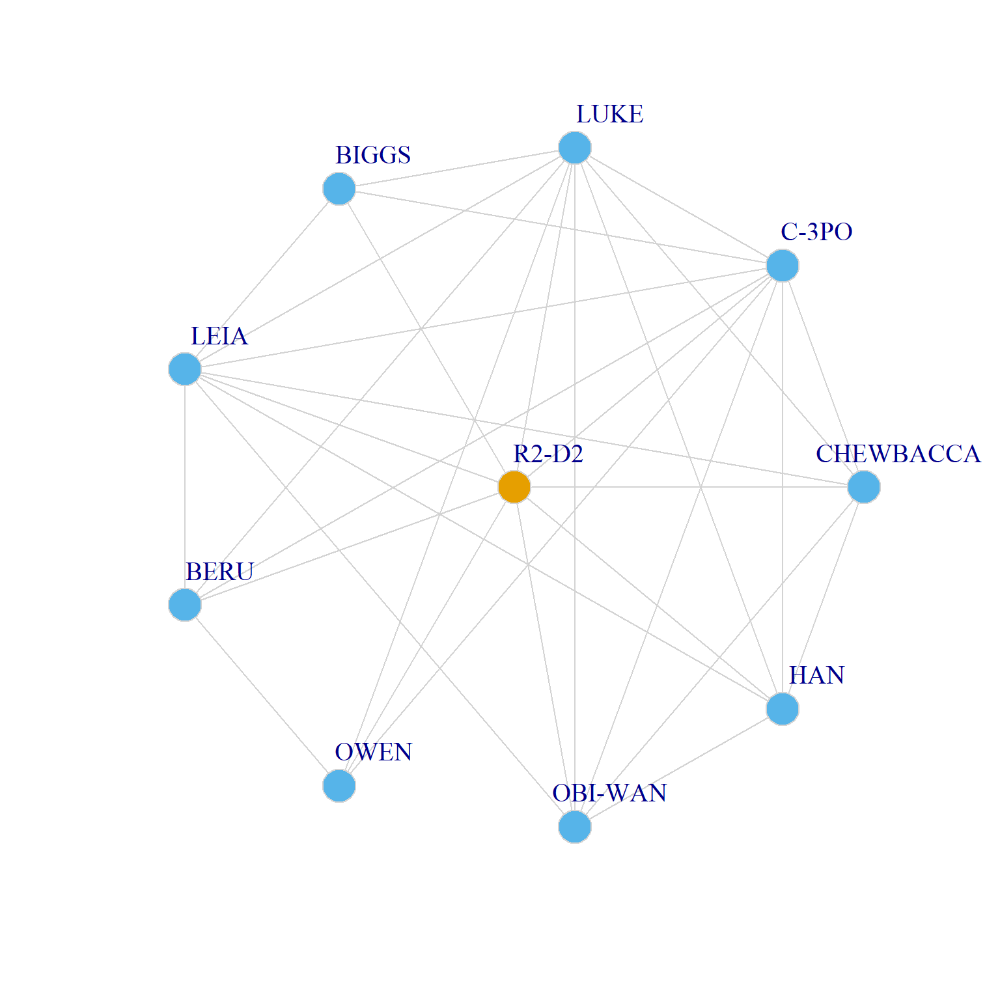
Note that we use the layout_as_star() for the layout, so that the ego is put in the center of the star graph surrounded by their alters, we can specify who the star node is using the option center.
R2-D2’s clustering coefficient is just the density of the graph that includes only the alters:
The clustering coefficient \(C_i\) for an ego \(i\) ranges from zero to one. \(C = 0\) means that none of ego’s alters are connected to one another and \(C = 1\) means that all of ego’s alters are connected to one another. In this case, \(C = 0.67\) means that 67% of R2-D2’s alters are connected (e.g., co-appear in scenes) to one another.
Typically we would want to compute the clustering coefficient of every node in a graph. This can be done using our trusty lapply and sapply meta-functions.
We proceed in three steps:
First, we turn the code we used to find R2-D2’s ego graph into a function:
Then we lapply the function to each node in the network:
[[1]]
IGRAPH 810ef73 UNW- 9 24 -- Episode IV – A New Hope
+ attr: name (g/c), name (v/c), height (v/n), mass (v/n), hair_color
| (v/c), skin_color (v/c), eye_color (v/c), birth_year (v/n), sex
| (v/c), homeworld (v/c), species (v/c), weight (e/n)
+ edges from 810ef73 (vertex names):
[1] CHEWBACCA--C-3PO CHEWBACCA--LUKE C-3PO --LUKE C-3PO --BIGGS
[5] LUKE --BIGGS CHEWBACCA--LEIA C-3PO --LEIA LUKE --LEIA
[9] BIGGS --LEIA C-3PO --BERU LUKE --BERU LEIA --BERU
[13] C-3PO --OWEN LUKE --OWEN BERU --OWEN CHEWBACCA--OBI-WAN
[17] C-3PO --OBI-WAN LUKE --OBI-WAN LEIA --OBI-WAN CHEWBACCA--HAN
[21] C-3PO --HAN LUKE --HAN LEIA --HAN OBI-WAN --HAN
[[2]]
IGRAPH 810f581 UNW- 6 15 -- Episode IV – A New Hope
+ attr: name (g/c), name (v/c), height (v/n), mass (v/n), hair_color
| (v/c), skin_color (v/c), eye_color (v/c), birth_year (v/n), sex
| (v/c), homeworld (v/c), species (v/c), weight (e/n)
+ edges from 810f581 (vertex names):
[1] R2-D2 --C-3PO R2-D2 --LUKE C-3PO --LUKE R2-D2 --LEIA
[5] C-3PO --LEIA LUKE --LEIA R2-D2 --OBI-WAN C-3PO --OBI-WAN
[9] LUKE --OBI-WAN LEIA --OBI-WAN R2-D2 --HAN C-3PO --HAN
[13] LUKE --HAN LEIA --HAN OBI-WAN--HAN
[[3]]
IGRAPH 810f684 UNW- 10 27 -- Episode IV – A New Hope
+ attr: name (g/c), name (v/c), height (v/n), mass (v/n), hair_color
| (v/c), skin_color (v/c), eye_color (v/c), birth_year (v/n), sex
| (v/c), homeworld (v/c), species (v/c), weight (e/n)
+ edges from 810f684 (vertex names):
[1] R2-D2 --CHEWBACCA R2-D2 --LUKE CHEWBACCA--LUKE
[4] R2-D2 --BIGGS LUKE --BIGGS R2-D2 --LEIA
[7] CHEWBACCA--LEIA LUKE --LEIA BIGGS --LEIA
[10] R2-D2 --BERU LUKE --BERU LEIA --BERU
[13] R2-D2 --OWEN LUKE --OWEN BERU --OWEN
[16] R2-D2 --OBI-WAN CHEWBACCA--OBI-WAN LUKE --OBI-WAN
+ ... omitted several edges
[[4]]
IGRAPH 810f78c UNW- 15 36 -- Episode IV – A New Hope
+ attr: name (g/c), name (v/c), height (v/n), mass (v/n), hair_color
| (v/c), skin_color (v/c), eye_color (v/c), birth_year (v/n), sex
| (v/c), homeworld (v/c), species (v/c), weight (e/n)
+ edges from 810f78c (vertex names):
[1] R2-D2 --CHEWBACCA R2-D2 --C-3PO R2-D2 --BERU
[4] R2-D2 --OWEN R2-D2 --OBI-WAN R2-D2 --LEIA
[7] R2-D2 --BIGGS R2-D2 --HAN CHEWBACCA--OBI-WAN
[10] CHEWBACCA--C-3PO CHEWBACCA--HAN CHEWBACCA--LEIA
[13] CAMIE --BIGGS BERU --OWEN C-3PO --BERU
[16] C-3PO --OWEN C-3PO --LEIA LEIA --BERU
+ ... omitted several edges
[[5]]
IGRAPH 810f882 UNW- 4 4 -- Episode IV – A New Hope
+ attr: name (g/c), name (v/c), height (v/n), mass (v/n), hair_color
| (v/c), skin_color (v/c), eye_color (v/c), birth_year (v/n), sex
| (v/c), homeworld (v/c), species (v/c), weight (e/n)
+ edges from 810f882 (vertex names):
[1] LEIA --OBI-WAN LEIA --MOTTI LEIA --TARKIN MOTTI--TARKIN
[[6]]
IGRAPH 810f975 UNW- 2 1 -- Episode IV – A New Hope
+ attr: name (g/c), name (v/c), height (v/n), mass (v/n), hair_color
| (v/c), skin_color (v/c), eye_color (v/c), birth_year (v/n), sex
| (v/c), homeworld (v/c), species (v/c), weight (e/n)
+ edge from 810f975 (vertex names):
[1] LUKE--BIGGSThe result is a list object with \(|V| = 21\) ego subgraphs composed of each node’s alters and their connections.
Finally, to find out the clustering coefficient of each node, we just sapply the igraph function edge_density to each member of the ego.graphs list:
R2-D2 CHEWBACCA C-3PO LUKE DARTH VADER CAMIE
0.67 1.00 0.60 0.34 0.67 1.00
BIGGS LEIA BERU OWEN OBI-WAN MOTTI
0.54 0.42 0.90 1.00 0.76 1.00
TARKIN HAN GREEDO JABBA DODONNA GOLD LEADER
1.00 0.54 NaN NaN 1.00 0.80
WEDGE RED LEADER RED TEN
0.80 0.57 1.00 Note we have a couple of NaN values in the slots corresponding to Greedo and Jabba in the clustering coefficient vector.
Let’s check out why:
R2-D2 CHEWBACCA C-3PO LUKE DARTH VADER CAMIE
9 6 10 15 4 2
BIGGS LEIA BERU OWEN OBI-WAN MOTTI
8 12 5 4 7 3
TARKIN HAN GREEDO JABBA DODONNA GOLD LEADER
3 8 1 1 3 5
WEDGE RED LEADER RED TEN
5 7 2 Here we see the problem is that both Greedo and Jabba are singleton nodes (with degree equal to one), so it doesn’t make sense to analyze their clustering coefficients because their ego graph is just an isolated node!
We can just drop them and re-analyze:
g <- subgraph(g, degree(g)> 1)
ego.graphs <- lapply(V(g)$name, create.ego, w = g)
C <- sapply(ego.graphs, edge_density)
names(C) <- V(g)$name
round(C, 2) R2-D2 CHEWBACCA C-3PO LUKE DARTH VADER CAMIE
0.67 1.00 0.60 0.34 0.67 1.00
BIGGS LEIA BERU OWEN OBI-WAN MOTTI
0.54 0.42 0.90 1.00 0.76 1.00
TARKIN HAN DODONNA GOLD LEADER WEDGE RED LEADER
1.00 1.00 1.00 0.80 0.80 0.57
RED TEN
1.00 Much better!
Note that in this analysis, Luke has the lowest clustering coefficient (\(C = 0.34\)) this usually indicates an ego whose alters are partitioned into distinct clusters (and hence they are not connected to one another), and ego is a mediator or broker between those clusters.
Let’s see what that looks like:
set.seed(456)
N <- neighbors(g, "LUKE")
luke.alters <- subgraph(g, N)
V(luke.alters)$color <- cluster_leading_eigen(luke.alters)$membership
luke <- subgraph(g, c("LUKE", names(N)))
luke <- simplify(union(luke, luke.alters))
V(luke)$color[which(is.na(V(luke)$color))] <- "red"
plot(luke,
vertex.size=6, vertex.frame.color="lightgray",
vertex.label.dist=1.25,
vertex.label.cex = 0.75, edge.color = "lightgray")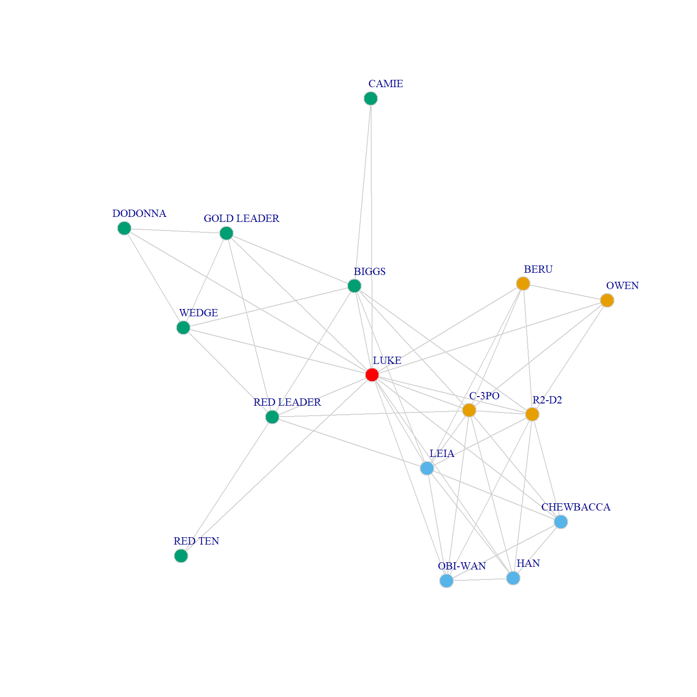
Here we can see that Luke mediates between the Rebel Pilot community on the left and the Obi-Wan, Leia, Chewbacca, Han Solo and Droid communities on the right. Note that we didn’t have to use that layout_as_star option because when ego’s network has community structure, the traditional spring embedding layout will put ego at the center.
Note that in the ego graph that includes ego, each connected alter is a triangle in the ego graph. So the clustering coefficient is simply a count of the number of undirected triangles that are centered on ego, or the number of cycles of length three centered on ego.
So that means that the diagonals of the cube of the adjacency matrix also contain the information needed to compute the clustering coefficient:
R2-D2 CHEWBACCA C-3PO LUKE DARTH VADER CAMIE
48 30 54 72 8 2
BIGGS LEIA BERU OWEN OBI-WAN MOTTI
30 56 18 12 32 6
TARKIN HAN DODONNA GOLD LEADER WEDGE RED LEADER
6 30 6 16 16 24
RED TEN
2 So all we need to do is divide these numbers by the maximum possible number of undirected triangles that could be centered on a node, which is \(k_i(k_i - 1)\) where \(k_i\) is ego’s degree:
R2-D2 CHEWBACCA C-3PO LUKE DARTH VADER CAMIE
0.67 1.00 0.60 0.34 0.67 1.00
BIGGS LEIA BERU OWEN OBI-WAN MOTTI
0.54 0.42 0.90 1.00 0.76 1.00
TARKIN HAN DODONNA GOLD LEADER WEDGE RED LEADER
1.00 1.00 1.00 0.80 0.80 0.57
RED TEN
1.00 Which gives us the answer as before!
Finally, from each ego’s clustering coefficient (sometimes called the local clustering coefficient of each node) we can compute the graph’s global clustering coefficient which is just the average this quantity across each node in the graph:
\[ C(G) = \frac{1}{N}\sum_iC_i \]
In R:
Which indicates a fairly clustered graph.
In igraph we can use the function transitivity to compute the local and global clustering coefficients, which can be specified using the argument type. For the local version, the function also expects a list of vertices:
R2-D2 CHEWBACCA C-3PO LUKE DARTH VADER CAMIE
0.67 1.00 0.60 0.34 0.67 1.00
BIGGS LEIA BERU OWEN OBI-WAN MOTTI
0.54 0.42 0.90 1.00 0.76 1.00
TARKIN HAN DODONNA GOLD LEADER WEDGE RED LEADER
1.00 1.00 1.00 0.80 0.80 0.57
RED TEN
1.00 And the graph’s global clustering coefficient is:
Effective Size
Another structural measure at the ego-network level, closely related to the clustering coefficient, is the effective size (Burt 1992).
The basic idea here is that if you have two alters in your network who are themselves connected to one another then they are redundant, that is the information you get from one can be substituted for the information you can get from the other (because you can always find the information of one via the other).
This means that instead of counting them as two alters, we should (dis)count them as one (or if you were engineering your ego network to optimize effective size, you would drop one and keep the other).
For an ego, the effective size \(ES\) is then given by:
\[ ES_i = k_i - \bar{k}_{j \in N(i)} \]
Where \(k_i\) is the ego network size (ego’s degree) and \(\bar{k}_{j \in N(i)}\) is the average degree of the subgraph formed by ego’s alters (excluding ego).
So to calculate \(ES\) in our network all we have to do is calculate the average degree of each ego graph and the subtract that from ego’s degree. We can obtain the average degree of each ego using the first two lapply and sapply lines in the following:
mk <- lapply(ego.graphs, degree) #degree sequence of each ego
mk <- sapply(mk, mean)
names(mk) <- V(g)$name
round(mk, 2) R2-D2 CHEWBACCA C-3PO LUKE DARTH VADER CAMIE
5.33 5.00 5.40 4.80 2.00 1.00
BIGGS LEIA BERU OWEN OBI-WAN MOTTI
3.75 4.67 3.60 3.00 4.57 2.00
TARKIN HAN DODONNA GOLD LEADER WEDGE RED LEADER
2.00 5.00 2.00 3.20 3.20 3.43
RED TEN
1.00 We can then compute ES as follows:
R2-D2 CHEWBACCA C-3PO LUKE DARTH VADER CAMIE
3.7 1.0 4.6 10.2 2.0 1.0
BIGGS LEIA BERU OWEN OBI-WAN MOTTI
4.2 7.3 1.4 1.0 2.4 1.0
TARKIN HAN DODONNA GOLD LEADER WEDGE RED LEADER
1.0 1.0 1.0 1.8 1.8 3.6
RED TEN
1.0 Note that for nodes with the maximum clustering coefficient (\(C_i = 1\)) (like Han) the \(ES\) measure reaches its minimum value of 1.0. The reason for this is that if the alter-to-alter network for an ego is a complete graph, then the average degree of that graph will necessarily be equal to the number of nodes in the alter-to-alter graph (ego’s degree) minus one.
Generally, \(ES\) will be smaller than ego’s degree, except in the case where ego is at the center of a star graph with \(C_i = 0\) (none of their contacts are connected to one another), in which case \(ES\) will be equal to ego’s degree (the effective size will be equal to the actual size).
Note that if two nodes have the same degree, but different clustering coefficients, then the effective size of their networks will be different, with the node with the larger clustering coefficient having a smaller effective size.
Here’s an example from A New Hope:
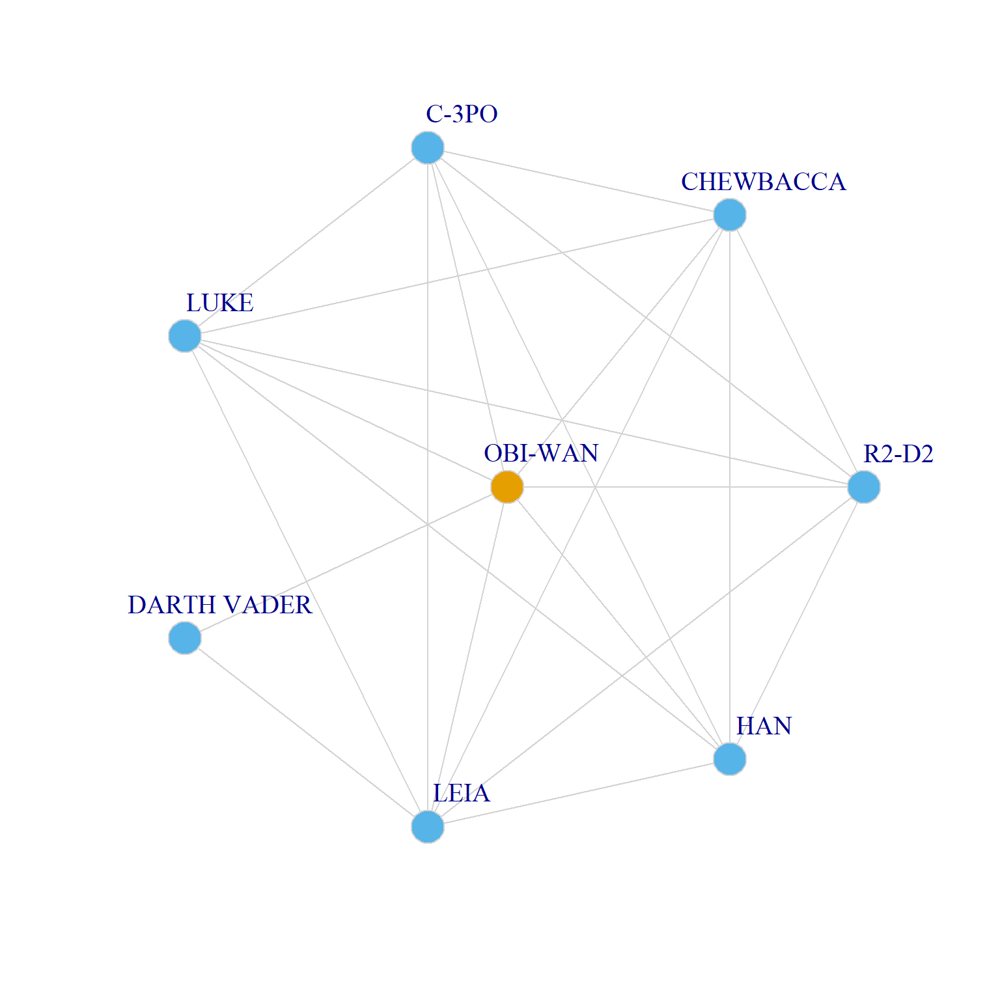
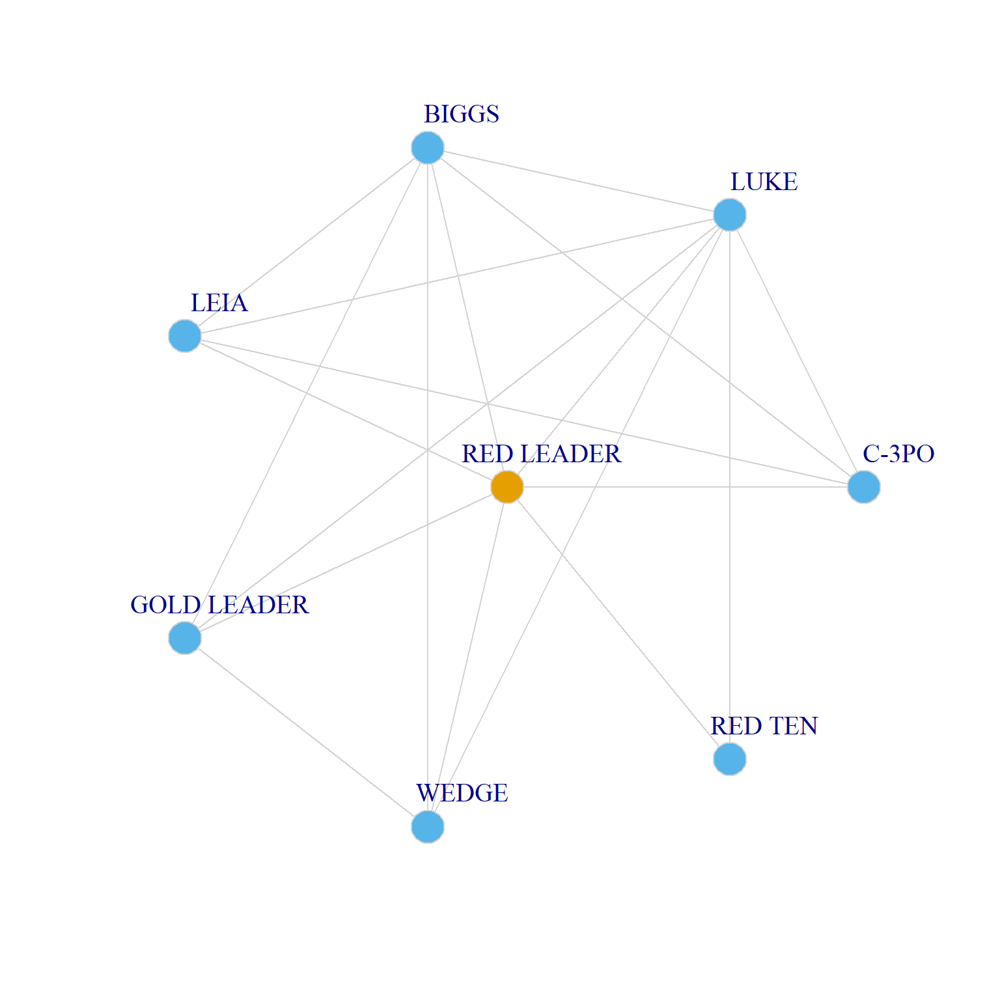
Two Ego Networks of the Same Size but Different Effective Size
Here we can see that even though both Obi-Wan and Red Leader have an ego network of the same size (\(k = 7\)), a larger proportion of Obi-Wan’s contacts (\(C = 0.76\)) are connected to one another that Red Leader’s (\(C = 0.57\)), which means that Obi-Wan’s effective size (\(ES = 2.4\)) ends up being smaller than Red Leader’s (\(ES = 3.6\)).
Ego-Network Betweenness
An alternative structural measure of ego’s position in the ego network, also closely related to the clustering coefficient, is ego network betweenness. As Everett and Borgatti (2005) note, in an ego network betweenness is determined by the number of paths of length two that involve ego, that is, by the number of disconnected alters.
Therefore, if \(\mathbf{A}\) is the adjacency matrix recording the links between the alters, then \(\mathbf{A}^2\) will contain the number of paths of length two between each pair of alters. Because we are only interested in the number of paths of length two between each pair of disconnected alters, we multiply (element-wise) this matrix by the adjacency matrix corresponding to the graph complement (a matrix with a one for every zero in the original adjacency matrix and a zero for each one). We then take the sum of the reciprocals of one of the triangles (excluding the main diagonal) of the resulting matrix to find the betweenness of ego.
In math:
\[ C_B(Ego) = \sum_{i < j}\left[\mathbf{A}^2 \bullet (\mathbf{J} - \mathbf{A})\right]_{ij}^{-1} \]
Where \(\mathbf{J}\) is a matrix full of ones of the same dimensions as \(\mathbf{A}\) and \(\bullet\) indicates element-wise matrix multiplication.
A simple function that does this looks like:
Let’s see how it works for Luke:
Which says that Luke has pretty high ego-network betweenness.
We can, of course, compute it for everyone in the network like before:
R2-D2 CHEWBACCA C-3PO LUKE DARTH VADER CAMIE
3.33 0.00 5.42 45.92 1.00 0.00
BIGGS LEIA BERU OWEN OBI-WAN MOTTI
5.58 25.83 0.25 0.00 2.50 0.00
TARKIN HAN DODONNA GOLD LEADER WEDGE RED LEADER
0.00 0.00 0.00 0.67 0.67 3.83
RED TEN
0.00 Which confirms our original impression of Luke as the highest ego-network betweenness character with Leia in second place.
What does it mean to have an ego-network betweenness of zero? Well, this is only possible if your clustering coefficient is 1.0, that is, when all of your alters are directly connected to one another. This is evident in Chewbacca’s ego network:
N <- neighbors(g, "CHEWBACCA")
chew <- subgraph(g, c("CHEWBACCA", names(N)))
V(chew)$color <- rep(2, vcount(chew))
V(chew)$color[which(V(chew)$name == "CHEWBACCA")] <- 1
plot(chew,
vertex.size=10, vertex.frame.color="lightgray",
vertex.label.dist=2,
layout = layout_as_star(chew, center = "CHEWBACCA"),
vertex.label.cex = 1.25, edge.color = "lightgray")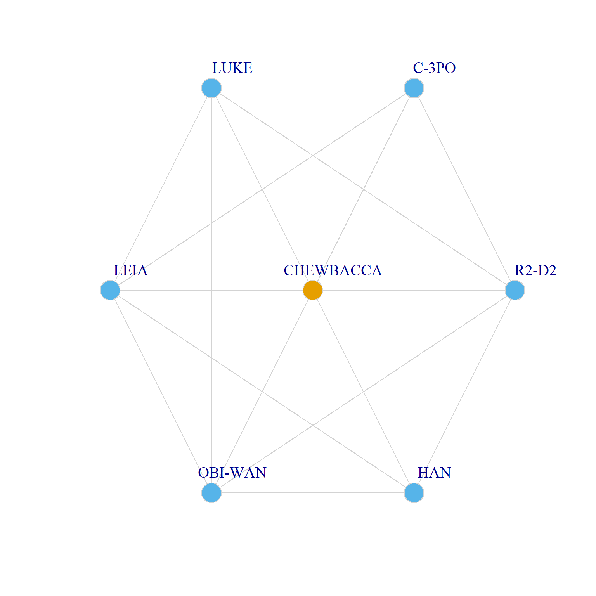
Which is a complete clique of size seven.
Compositional Measures
Ego Network Diversity
If we have information on the categorical vertex attributes of ego’s alters we may be interested in how diverse are ego’s choices across those attributes.
The most common measure is Blau’s Diversity Index (\(H\)). For a categorical attribute with \(m\) levels, this is given by:
\[ H = 1 - \sum_{k=1}^m p_k^2 \]
Where \(p_k\) is the proportion of ego’s alters that fall under category level \(k\).
The \(H\) measure ranges from a minimum of \(H = 0\) (all of ego’s alters belong to a single category) to a maximum of \(H = 1- \frac{1}{m}\) (all of ego’s alters belong to a different category).
When the Blau diversity index is normalized by its theoretical maximum, it is sometimes referred to as the Index of Qualitative Variation or \(IQV\):
\[ IQV = \frac{1 - \sum_{k=1}^m p_k^2}{1-\frac{1}{m}} \]
The main difference between \(H\) and \(IQV\) is that the latter has a maximum of \(IQV = 1.0\) indicating the top diversity that can be observed for a categorical attribute with \(m\) categories.
Let’s see how this would work.
First, let’s switch to the Attack of the Clones Star Wars graph:
Now, we will pick the vertex attribute homeworld and try to measure how diverse is each character’s ego network on this score.
To do that, we need to get the proportion of characters from each homeworld in the network.
Let’s check out this vertex attribute:
[1] "Naboo" "Naboo" "Naboo" NA
[5] NA "Haruun Kal" NA "Cerea"
[9] "Alderaan" "Naboo" "Stewjon" "Tatooine"
[13] "Naboo" NA NA NA
[17] "Kamino" "Kamino" "Kamino" "Concord Dawn"
[21] "Tatooine" "Tatooine" "Tatooine" "Tatooine"
[25] "Serenno" NA "Geonosis" "Cato Neimoidia"There are some NA values here, so let’s create a residual category called “other”:
[1] "Naboo" "Naboo" "Naboo" "Other"
[5] "Other" "Haruun Kal" "Other" "Cerea"
[9] "Alderaan" "Naboo" "Stewjon" "Tatooine"
[13] "Naboo" "Other" "Other" "Other"
[17] "Kamino" "Kamino" "Kamino" "Concord Dawn"
[21] "Tatooine" "Tatooine" "Tatooine" "Tatooine"
[25] "Serenno" "Other" "Geonosis" "Cato Neimoidia"Great! Now we can use the native R function table to get the relevant proportions.
The function table gives us the count of characters in each category, and then we divide by the total number of actors in the network, given by vcount:
Alderaan Cato Neimoidia Cerea Concord Dawn Geonosis
0.036 0.036 0.036 0.036 0.036
Haruun Kal Kamino Naboo Other Serenno
0.036 0.107 0.179 0.250 0.036
Stewjon Tatooine
0.036 0.179 Now that we know how to get the proportions we need, we can write a custom function that will compute \(H\) (or its normalized counterpart the \(IQV\)) for a given ego network for any given attribute:
This function takes three inputs: The name of the ego n, the graph object w, and the name of the attribute a. It returns the Blau diversity index score for that ego on that attribute by default; when norm is set to TRUE it returns the normalized Blau score (a.k.a. the \(IQV\)).
Let’s see Padme’s Home World ego network diversity score:
Which says that Padme has a fairly diverse ego network when it comes to Home World.
We can, of course, just use sapply to compute everyone’s Home World ego network diversity score:
R2-D2 CAPTAIN TYPHO EMPEROR SENATOR ASK AAK ORN FREE TAA
0.444 0.667 0.815 0.776 0.444
MACE WINDU YODA KI-ADI-MUNDI BAIL ORGANA JAR JAR
0.820 0.840 0.750 0.776 0.780
OBI-WAN ANAKIN PADME SOLA JOBAL
0.858 0.809 0.796 0.625 0.625
RUWEE TAUN WE LAMA SU BOBA FETT JANGO FETT
0.625 0.625 0.500 0.667 0.625
C-3PO OWEN BERU CLIEGG COUNT DOOKU
0.444 0.320 0.320 0.320 0.860
SUN RIT POGGLE NUTE GUNRAY
0.833 0.833 0.833 In this network Count Dooku stands out as having a very diverse ego network by Home World, while Owen sports a very homogeneous ego network on the same attribute.
Let’s see a side-by-side comparison:
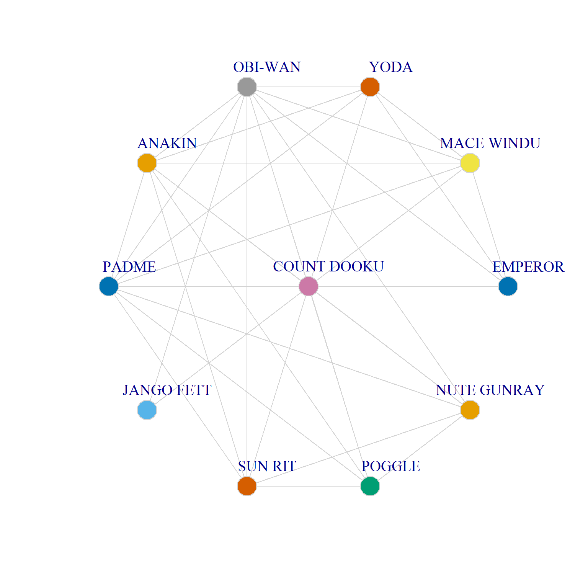
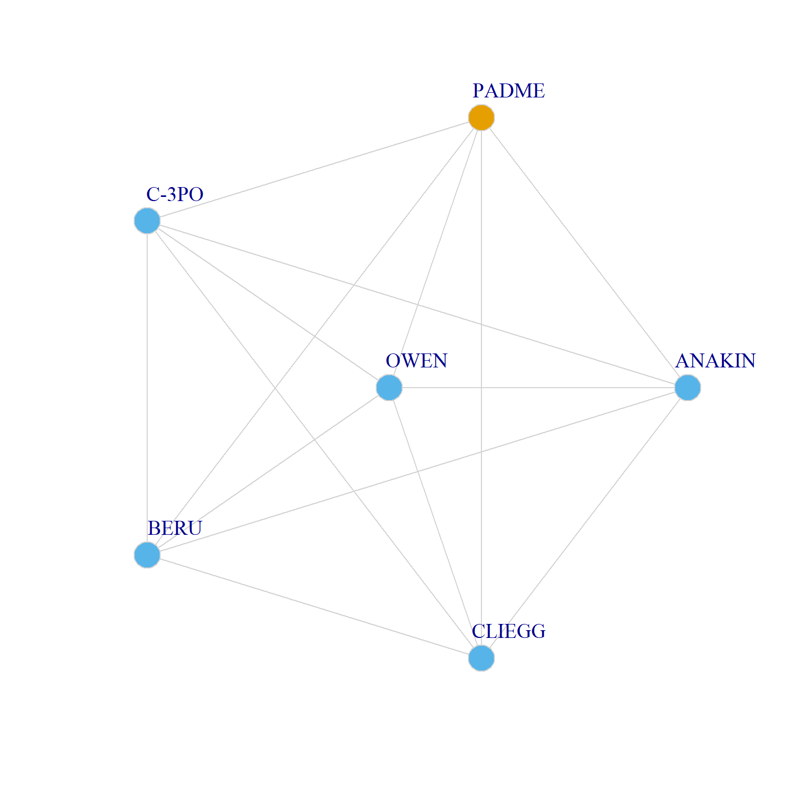
Two Ego Networks with Nodes Colored by Homeworld
And here are the corresponding \(IQV\) scores for everyone in the network:
R2-D2 CAPTAIN TYPHO EMPEROR SENATOR ASK AAK ORN FREE TAA
0.889 1.000 0.951 0.969 0.889
MACE WINDU YODA KI-ADI-MUNDI BAIL ORGANA JAR JAR
0.957 0.960 1.000 0.969 0.936
OBI-WAN ANAKIN PADME SOLA JOBAL
0.953 0.924 0.910 0.937 0.937
RUWEE TAUN WE LAMA SU BOBA FETT JANGO FETT
0.937 0.937 1.000 1.000 0.937
C-3PO OWEN BERU CLIEGG COUNT DOOKU
0.889 0.640 0.640 0.640 0.983
SUN RIT POGGLE NUTE GUNRAY
1.000 1.000 1.000 As we noted an ego network with maximum diversity \(IQV = 1.0\) is one where every alter is in a different category. Here are two examples:
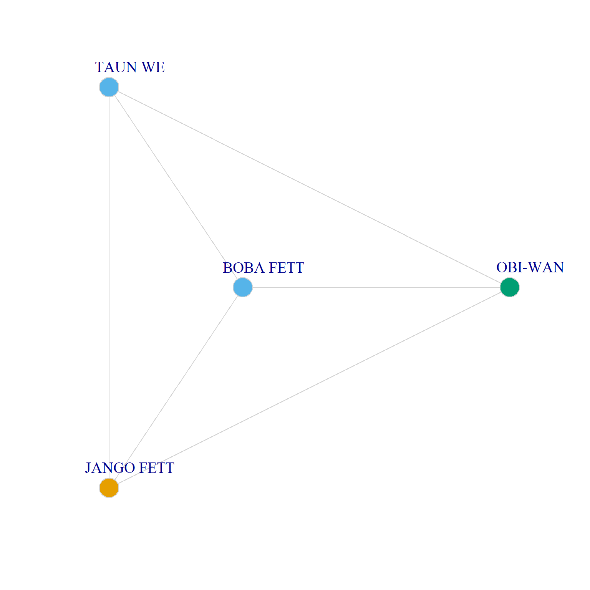
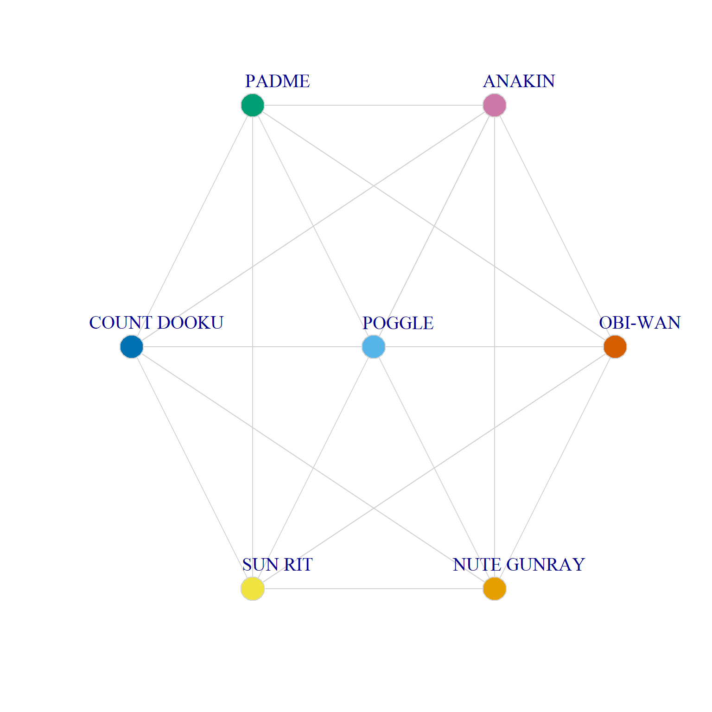
Two Ego Networks with Maximum Homeworld Diversity.
Ego Network Homophily
Diversity measures the extent to which ego’s connect to alters who are the same or different from one another. We may also want to get a sense of how homophilous an ego network is, namely, the extent to which ego connects to alters that are the same or different from them.
For instance, a person can have an ego network composed of 100% alters who are different from them on a given attribute (maximum “heterophily”) but those alters could be 100% homogeneous—e.g., all come from the same planet—and thus ego will have the minimum Blau diversity score (\(H = 0\)).
To measure homophily in the ego network we use the EI homophily index. This is given by:
\[ EI = \frac{E-I}{E+I} \]
Where \(E\) is the number of “external” ties (alter different from ego on attribute), and \(I\) is the number of “internal” ties (alter same as ego on attribute).
The \(EI\) index ranges from a minimum of \(EI = -1\), indicating maximum homophily, to a maximum of \(EI = 1\), indicating maximum heterophily. An EI index value of zero indicates no preference for internal over external ties.
So let’s write a function that does what we want to calculate EI:
Let’s look at the attribute sex:
[1] "none" "male" "male" NA NA "male" "male" "male"
[9] "male" "male" "male" "male" "female" NA NA NA
[17] "female" "male" "male" "male" "none" "male" "female" "male"
[25] "male" NA "male" "male" Getting rid of the NA values:
[1] "none" "male" "male" "Other" "Other" "male" "male" "male"
[9] "male" "male" "male" "male" "female" "Other" "Other" "Other"
[17] "female" "male" "male" "male" "none" "male" "female" "male"
[25] "male" "Other" "male" "male" And calculating the homophily index on gender for everyone:
R2-D2 CAPTAIN TYPHO EMPEROR SENATOR ASK AAK ORN FREE TAA
0.33 -1.00 -0.56 0.71 0.33
MACE WINDU YODA KI-ADI-MUNDI BAIL ORGANA JAR JAR
-0.60 -0.60 -1.00 -0.71 -0.40
OBI-WAN ANAKIN PADME SOLA JOBAL
-0.53 -0.11 0.88 0.00 0.00
RUWEE TAUN WE LAMA SU BOBA FETT JANGO FETT
0.00 1.00 0.00 -0.33 -0.50
C-3PO OWEN BERU CLIEGG COUNT DOOKU
0.67 0.20 0.60 0.20 -0.60
SUN RIT POGGLE NUTE GUNRAY
1.00 -0.33 -0.33 As we can see, the Emperor, Mace Windu, Obi-Wan and other such characters have a homophilous “bro” network. Padme, on the other hand, has a heterophilous network with respect to gender.
Let’s see a side-by-side comparison:
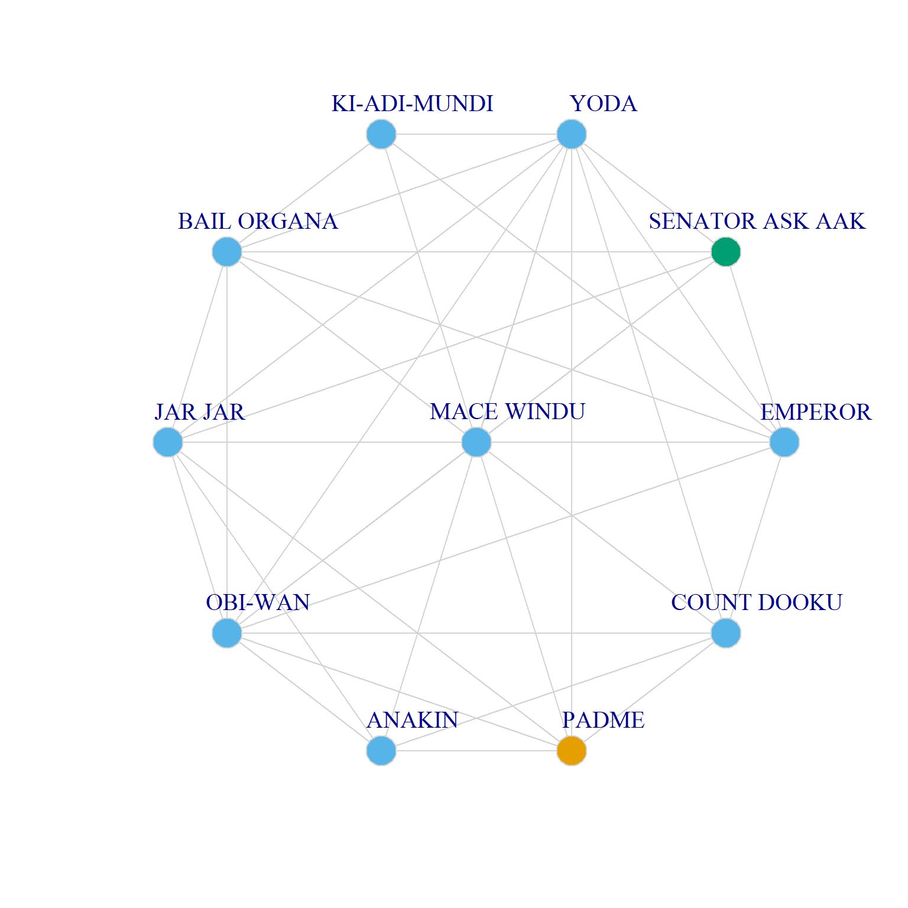
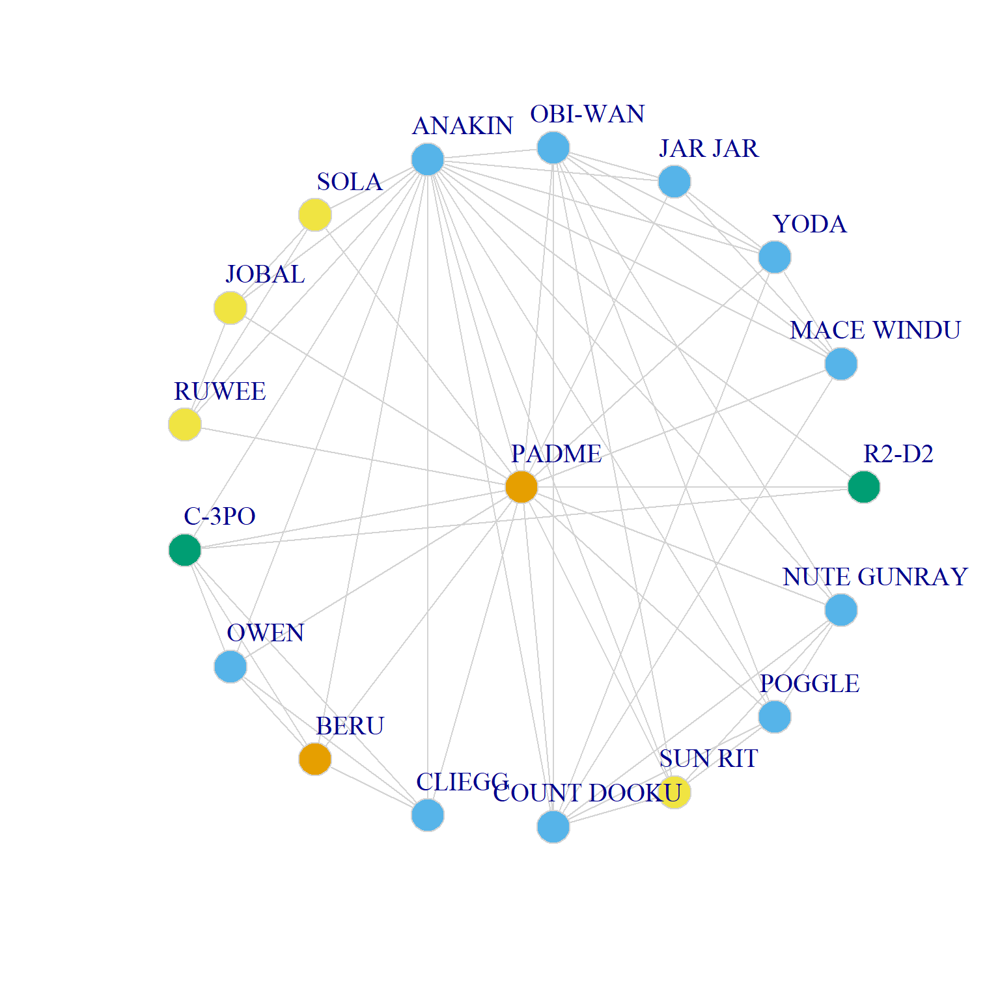
Two Ego Networks with Nodes Colored by Gender
As we can see, Mace Windu is mostly surrounded by other men (like him) but Padme’s network includes only one other woman, and the rest are composed of people with a different gender presentation than her (or have no discernible gender like the droids).
Like the clustering coefficient, we can compute a graph level index of homophily on a given attribute. This is given by the average EI index of nodes in the graph for that attribute.
In the case of gender in Attack of the Clones:
Which shows a slight preference for same-gender ties in the network.
Normalized EI
Sometimes we may want to take into account that the group sizes of different categories of people is unequal in the network. For instance, Star Wars is full characters gendered as men, which means that any homophily index will penalize men as being more homophilous simply because there are more men around to form ties with.
Everett and Borgatti (2012, 564–65) propose approach to normalizing the EI index to account for unequal group sizes, yielding the \(NEI\). So instead of computing EI they suggest calculating:
\[ E^* = \frac{E}{N-Ns} \]
\[ I^* = \frac{I}{Ns} \]
\[ NEI = \frac{E^*-I^*}{E^*+I^*} \]
With \(N_s\) being the number of “similar” nodes to ego in the whole graph (or external population) and \(N\) being the total number of nodes (or persons in the population). As you can see, the \(NEI\) weights both the number of external and \(E\) the number of internal ties \(I\) by their maximum possible values in the network.
Here’s a function that does that:
NEI <- function(n, w, a) {
N <- vcount(w)
Ns <- sum(vertex_attr(w, a) == vertex_attr(w, a, n))
x <- subgraph(w, neighbors(w, n))
E <- sum(vertex_attr(w, a, n) != vertex_attr(x, a))
I <- sum(vertex_attr(w, a, n) == vertex_attr(x, a))
E <- E/(N - Ns) #normalized E
I <- I/Ns #normalized I
res = (E - I)/(E + I)
return(res)
}Let’s re-check Mace Windu’s and Padme’s EI index using the normalized version:
As we can see the NEI scores are less extreme than the unnormalized ones, once we take into account that the majority of characters in the film are men.
Here are the NEI scores with respect to gender for everyone:
R2-D2 CAPTAIN TYPHO EMPEROR SENATOR ASK AAK ORN FREE TAA
-0.73 -1.00 -0.39 0.24 -0.29
MACE WINDU YODA KI-ADI-MUNDI BAIL ORGANA JAR JAR
-0.44 -0.44 -1.00 -0.59 -0.20
OBI-WAN ANAKIN PADME SOLA JOBAL
-0.36 0.11 0.32 -0.57 -0.57
RUWEE TAUN WE LAMA SU BOBA FETT JANGO FETT
-0.57 1.00 0.21 -0.13 -0.32
C-3PO OWEN BERU CLIEGG COUNT DOOKU
-0.44 0.40 -0.35 0.40 -0.44
SUN RIT POGGLE NUTE GUNRAY
1.00 -0.13 -0.13 Interestingly, while most people’s scores are attenuated towards zero in the normalized scale, R2-D2’s becomes more extreme going from weakly positive (demonstrating “gender” heterophily) to extreme negative (showing same “gender” preference).
Let’s see what’s going on:
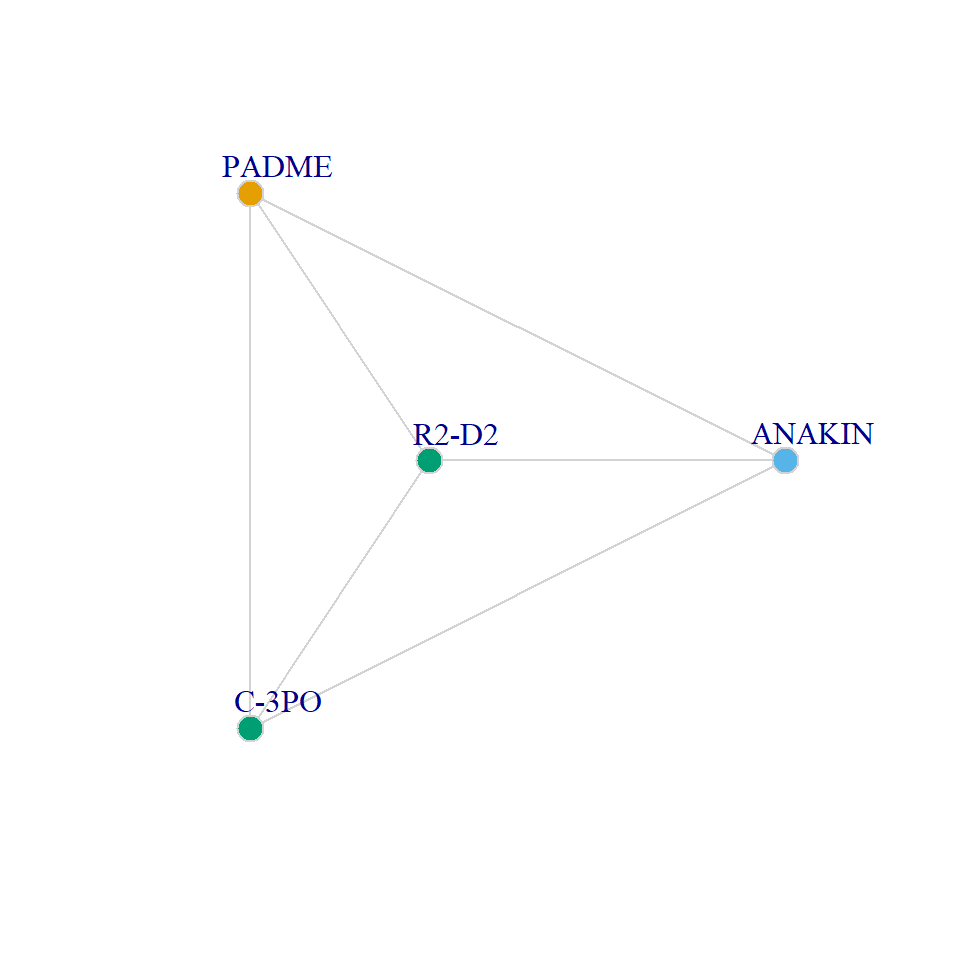
Here we can see that the reason why R2-D2 ends up being high in homophily in the NEI despite containing a network with just three nodes and only a single “same-gender” (i.e., none) tie, is that he is connected to C3PO who is the only other character (a droid) whose gender is also assigned to “none.”
And here’s the graph’s overall NEI:
Which shows that our previous unnormalized average under-estimated homophily in this network. Instead, there is a moderately strong tendency for characters to co-appear with others of the same gender classification once the imbalance favoring men is accounted for.
Other Ways of Accounting for Imbalanced Group Sizes in Homophily Metrics
As may already be evident, when constructing a homophily measure that takes into account the population (or local network) proportions of various types of alters, there are four pieces of information that we have to take into account:
- Number of alters linked to ego of the same category as ego.
- Number of alters linked to ego of a different category from ego.
- Number of alters not linked to ego of the same category as ego.
- Number of alters not linked to ego of a different category from ego.
Which yields a classic 2 by 2 table.
Here’s a function that produces such a table for each ego for a given attribute:
abcd <- function(n, w, a) {
x <- subgraph(w, neighbors(w, n))
same <- vertex_attr(w, a, n) == vertex_attr(w, a)
same <- same[!(same %in% n)] #deleting ego node from vector
tied <- as.vector(V(w)$name) %in% names(neighbors(w, n))
tab <- table(tied, same)
tab <- tab[2:1, 2:1] #reversing row and column order of table
return(tab)
}So for Count Dooku with respect to gender, this 2 X 2 table looks like:
So here we can see that Dooku is linked to eight others of the same gender, but there are nine other men he’s not linked to. In the same way, he has two different-gender ties, but there are nine others of a different gender he’s not tied to.
As Everett and Borgatti (2012) note, we can label the cells of the 2 X 2 EI table with the letters from the above list to highlight each piece of information in each cell:
same
tied TRUE FALSE
TRUE a b
FALSE c d Using this nomenclature, the EI index is given by:
\[ EI = \frac{a-b}{a+b} \]
It is clear that the EI only uses information only from the first row (alters tied to ego) and is thus sensitive to group size imbalances because it ignores the other pieces of information (\(c\) and \(d\)).
The NEI, on the other hand, using the same 2 X 2 table cell coding, is given by:
\[ NEI = \frac{\left(\frac{a}{a+c}\right)-\left(\frac{b}{b+d}\right)}{\left(\frac{a}{a+c}\right)+\left(\frac{b}{b+d}\right)} \]
Which makes clear that NEI uses information from all four cells therefore, it is insensitive to group size imbalances.
Other measures of homophily could thus be constructed from the entries in the 2 X 2 table, that, like the NEI, are not sensitive to group sizes because they use all four pieces of information.
The Point Biserial Correlation
One such measure Everett and Borgatti (2012, 565) recommend is the point biserial correlation coefficient (\(r^{pb}\)), which is given, using the cell labels in the table above, by:
\[ r^{pb} = \frac{ad-bc}{\sqrt{(a+c)(b+d)(a+b)(c+d))}} \]
From the formula it is clear that \(r^{pb}\) is positive whenever ego is connected to similar alters and disconnected from non-similar ones (the numbers in the main diagonals of the 2 X 2 table, \(a\) and \(d\), are big). In this way, the \(r^{pb}\) works just like a correlation coefficient. A value 1.0 indicates maximum preference for same category alters, and a value closer to -1.0 indicates preference to connect with people different from ego.
A function that computes \(r^{pb}\) from the output of abcd above is:
For Dooku, \(r^{pb}\) is:
Which shows a positive tendency for same gender ties, net of the imbalance between men and other-gendered characters in the film.
To calculate \(r^{pb}\) for the whole network, first we need to create a list containing the corresponding 2 X 2 EI tables for each node for the gender attribute:
abcd.gender <- lapply(V(g)$name, abcd, w = g, a = "sex")
names(abcd.gender) <- V(g)$name
head(abcd.gender)$`R2-D2`
same
tied TRUE FALSE
TRUE 1 2
FALSE 1 24
$`CAPTAIN TYPHO`
same
tied TRUE FALSE
TRUE 3 0
FALSE 14 11
$EMPEROR
same
tied TRUE FALSE
TRUE 7 2
FALSE 10 9
$`SENATOR ASK AAK`
same
tied TRUE FALSE
TRUE 1 6
FALSE 5 16
$`ORN FREE TAA`
same
tied TRUE FALSE
TRUE 1 2
FALSE 5 20
$`MACE WINDU`
same
tied TRUE FALSE
TRUE 8 2
FALSE 9 9And then sapply the function pb.corr to each element of this list:
R2-D2 CAPTAIN TYPHO EMPEROR SENATOR ASK AAK ORN FREE TAA
0.35 0.28 0.24 -0.10 0.10
MACE WINDU YODA KI-ADI-MUNDI BAIL ORGANA JAR JAR
0.29 0.29 0.33 0.30 0.14
OBI-WAN ANAKIN PADME SOLA JOBAL
0.40 -0.14 -0.19 0.28 0.28
RUWEE TAUN WE LAMA SU BOBA FETT JANGO FETT
0.28 -0.14 -0.06 0.04 0.12
C-3PO OWEN BERU CLIEGG COUNT DOOKU
0.19 -0.20 0.14 -0.20 0.29
SUN RIT POGGLE NUTE GUNRAY
-0.27 0.06 0.06 Which shows that, after accounting for group sizes, most characters display slight to moderate preferences for same-gender ties, with the exception of Anakin, Padme, Taun We, Owen, Clegg, and Sun Rit.
If we wanted to see what proportion of nodes have a same-gender preference we just type:
Which suggest that about 70% of the characters display a tendency to appear with same gender others (accounting for differences in the sizes of different gender groups).
And at the network level, the point-biserial correlation homophily measure for gender is:
Which also suggests a slight preference for same gender ties in this network.
Yule’s Q
The point biserial correlation is a good measure of homiphily but comes at the expense of the simplicity of the EI index. If you favor a simpler approach that also makes us of all of the information in the 2 X 2 table, Yule’s \(Q\) is a good option (Borgatti et al. 2024, 159):
\[ Q = \frac{ad-bc}{ad+bc} \]
Like \(r^{pb}\), \(Q\) works like a correlation coefficient. It is at is maximum value of \(Q = 1\) when ego has no connections to different-category others (\(b=0\))—maximum homophily—and it is at a minimum of \(Q = -1\) when ego has no connections to same-category others (\(a=0\))—maximum heterophily.
A function to calculate \(Q\) from the abcd function output is as follows:
And here are the values for the Attack of the Clones network:
R2-D2 CAPTAIN TYPHO EMPEROR SENATOR ASK AAK ORN FREE TAA
0.85 1.00 0.52 -0.30 0.33
MACE WINDU YODA KI-ADI-MUNDI BAIL ORGANA JAR JAR
0.60 0.60 1.00 0.69 0.30
OBI-WAN ANAKIN PADME SOLA JOBAL
0.70 -0.30 -0.56 0.67 0.67
RUWEE TAUN WE LAMA SU BOBA FETT JANGO FETT
0.67 -1.00 -0.23 0.14 0.36
C-3PO OWEN BERU CLIEGG COUNT DOOKU
0.62 -0.48 0.45 -0.48 0.60
SUN RIT POGGLE NUTE GUNRAY
-1.00 0.16 0.16 Let’s compare four egos with extreme values on \(Q\):
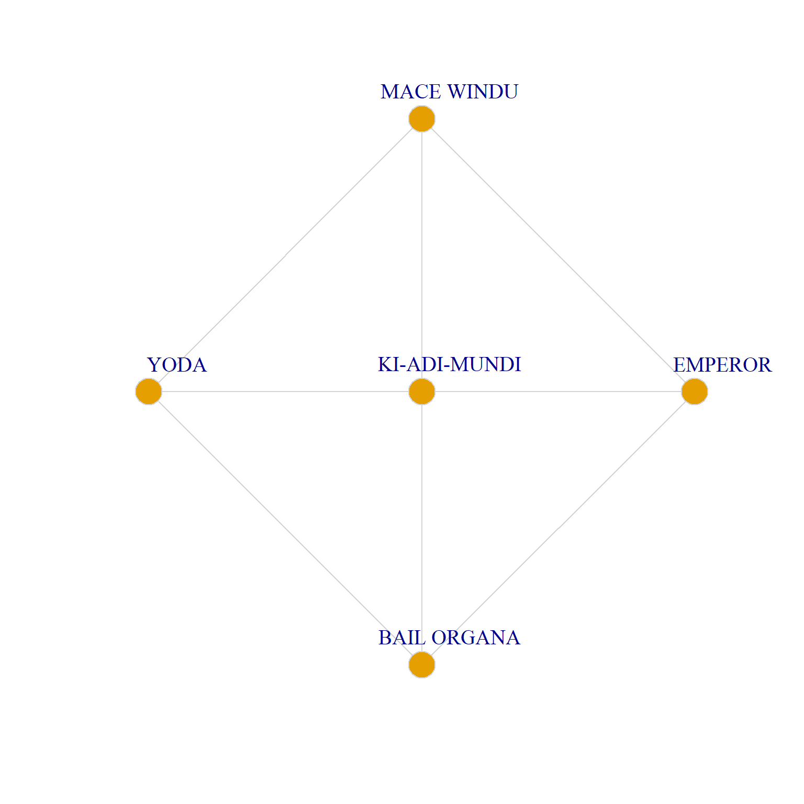
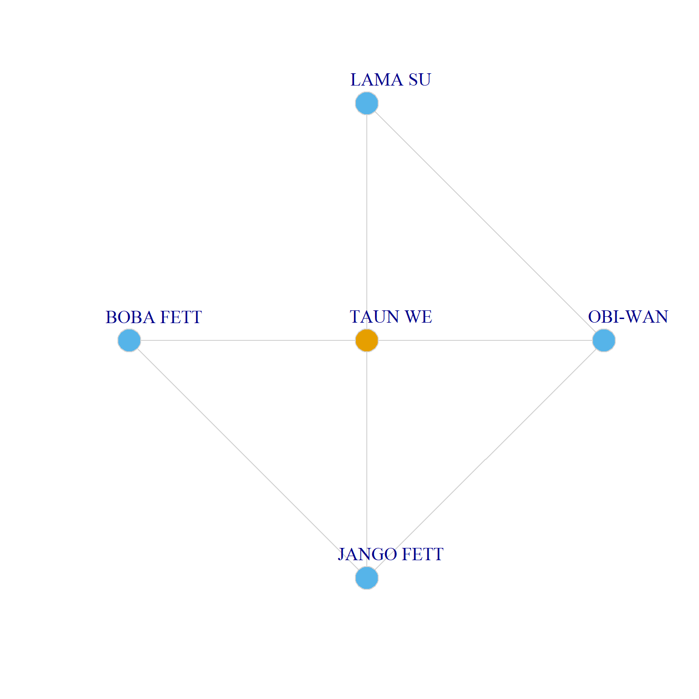
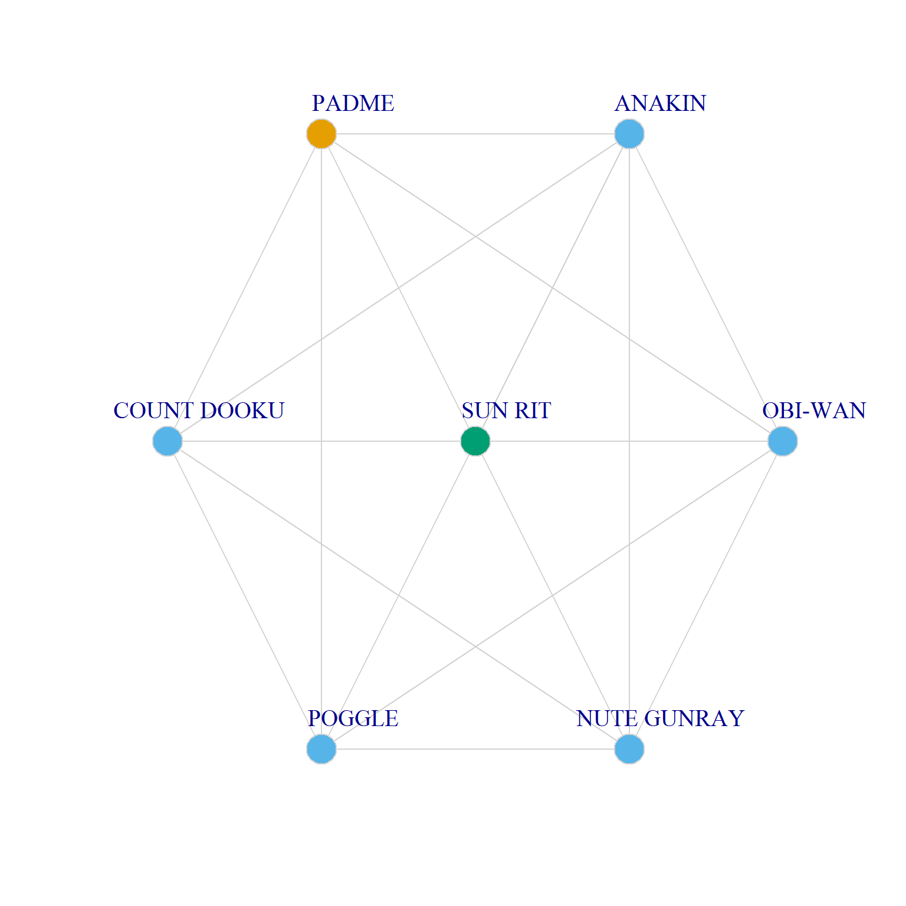
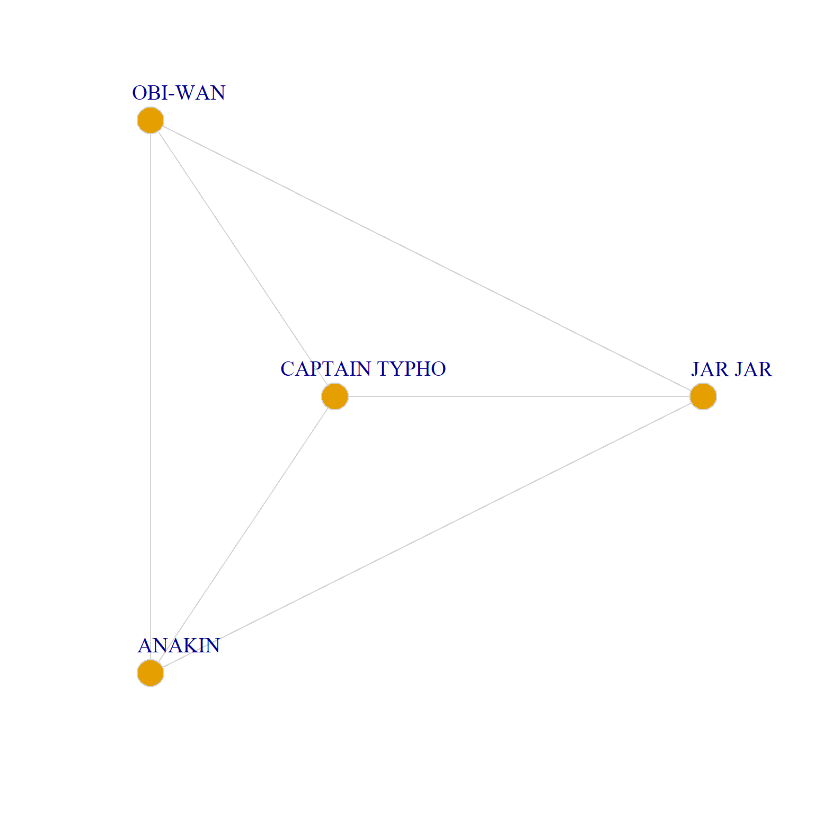
Two Ego Networks with Maximum and Minimum Q Values
As we can see, Ki-Adi-Mundi and Captain Typhoo have an ego network that combine maximum homophily and homogeneity with respect to gender (both ego networks are composed of all men)–and therefore both receive the minimum score of \(Q=-1\).
Taun We, on the other hand, has an ego network that combines maximum heterophily with maximum homogeneity of alters with respect to the same attribute (she has an all-men ego network), thus receiving the maximum \(Q=-1\). Sun Rit has some heterogeneity in their ego network, but because all alters are of a different gender category from them, they also receive a minimum score of \(Q=-1\).
The average value of \(Q\) for the whole network is:
Which also suggests a slight same-gender preference in the network after accounting for imbalanced group sizes.